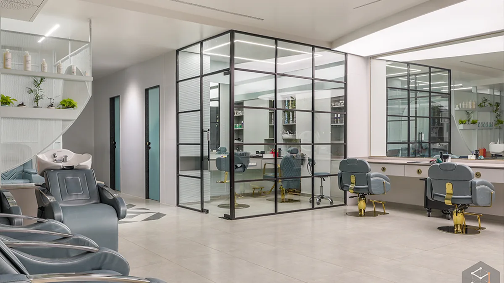

Choosing a facial when you have sensitive skin requires more attention than simply selecting a treatment from a salon menu. Products, exfoliation methods, fragrances, steam, and facial techniques can all influence how your skin responds. A treatment that works well for one person may cause redness, irritation, or discomfort for another.
A suitable facial for sensitive skin should prioritise gentle cleansing, skin comfort, appropriate moisturisation, and carefully selected products rather than aggressive exfoliation or intensive treatments. If you are considering a sensitive skin facial in Vadodara, understanding what to check before booking can help you make a more informed decision.
A sensitive skin facial is a customised skincare treatment designed for people whose skin reacts easily to certain products, ingredients, or environmental factors.
Sensitive skin may experience temporary redness, itching, tightness, stinging, dryness, or irritation. These reactions can have different causes, so identifying individual triggers is important before selecting a facial.
A gentle facial may include:
Before choosing a salon facial, consider the following factors to understand whether the treatment is appropriate for your skin.
Product ingredients are among the most important considerations for sensitive skin. Certain fragrances, essential oils, exfoliating acids, and other ingredients may trigger irritation in people with particular sensitivities.
Before booking, ask the salon which products will be used during the treatment.
Look for products that are appropriate for your skin and avoid ingredients that have previously caused reactions.
Some commonly used skincare ingredients include:
If you have experienced reactions to skincare products or are trying unfamiliar products, ask whether a patch test is appropriate before the facial.
Patch testing can help identify potential reactions to specific products or ingredients. However, a salon product check is not a substitute for medical allergy patch testing performed by a dermatologist.
Do not assume that a product is safe simply because it is labelled hypoallergenic or suitable for sensitive skin.
Exfoliation removes dead skin cells, but aggressive exfoliation can irritate skin that is already sensitive.
Before booking, ask whether the facial includes:
Some traditional facials include steam and manual extractions as part of the treatment.
However, heat, friction, and unnecessary pressure may increase discomfort or redness in reactive skin.
Ask whether these steps can be skipped or modified according to your skin's tolerance. A good treatment plan should not require every standard facial step.
A professional consultation should happen before the treatment begins. The person performing the facial should understand your skin history and adjust the treatment accordingly.
Share information about:
Not every facial treatment is suitable for reactive skin. Certain procedures may increase irritation, particularly when the skin barrier is already compromised.
Consider discussing the following treatments with your skincare professional before booking:
Sensitive skin does not always have the same characteristics. Some people experience dryness, while others struggle with redness or frequent irritation.
| Skin Concern | Facial Approach to Consider | Main Focus |
|---|---|---|
| Dry and sensitive skin | Gentle hydrating facial | Moisture support |
| Redness-prone skin | Gentle calming facial | Skin comfort |
| Easily irritated skin | Minimal-ingredient facial | Reducing potential triggers |
| Sensitive combination skin | Customised facial | Balancing different skin areas |
| Dehydrated sensitive skin | Barrier-supporting facial | Improving hydration |
These are general skincare considerations, not treatments for underlying skin conditions. If you experience persistent redness, eczema, rosacea, or recurring reactions, consult a dermatologist before booking a cosmetic facial.
Preparing your skin properly can help your skincare professional understand its condition and select suitable products.
Follow these recommendations:
Finding the right salon for sensitive skin requires more than comparing facial packages and prices. Understanding the products used, treatment steps, and professional approach is equally important.
At Frenyz Salon in Vadodara, clients exploring facial and beauty services can discuss their skincare preferences and requirements before selecting a treatment.
Before booking, consider discussing:
Choosing a facial for sensitive skin requires careful consideration of ingredients, exfoliation methods, skin preparation, and professional consultation. A gentle, customised approach is generally preferable to intensive treatments that may increase irritation.
Before booking a sensitive skin facial in Vadodara, ask about the products used, available patch testing, treatment steps, and aftercare recommendations. Most importantly, choose a treatment based on your skin's individual requirements rather than its advertised benefits.
A gentle, hydrating or calming facial with suitable products may be appropriate for sensitive skin. The choice depends on individual triggers, skin condition, and product tolerance. A consultation before treatment can help determine the most suitable approach.
Not everyone with sensitive skin needs a monthly facial. The appropriate frequency depends on skin condition, treatment intensity, and how the skin responds. Consult your skincare professional before establishing a regular treatment schedule.
It is generally better to postpone a cosmetic facial when your skin is actively irritated, inflamed, sunburned, or damaged. If irritation is persistent or accompanied by itching, swelling, or discomfort, consult a dermatologist before trying another treatment.